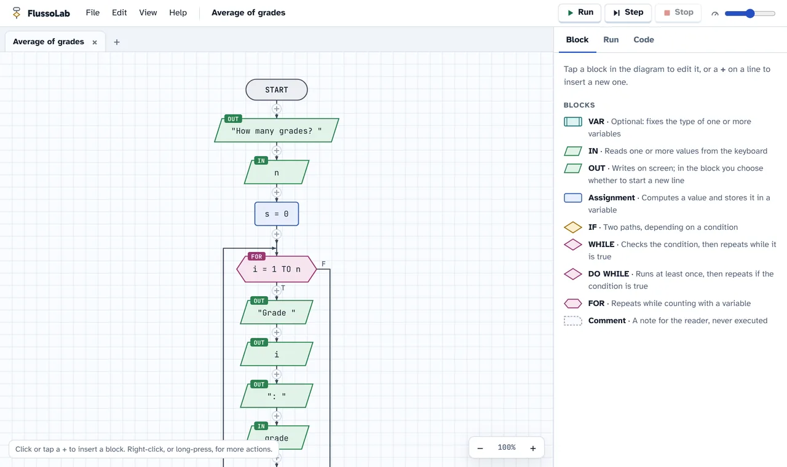
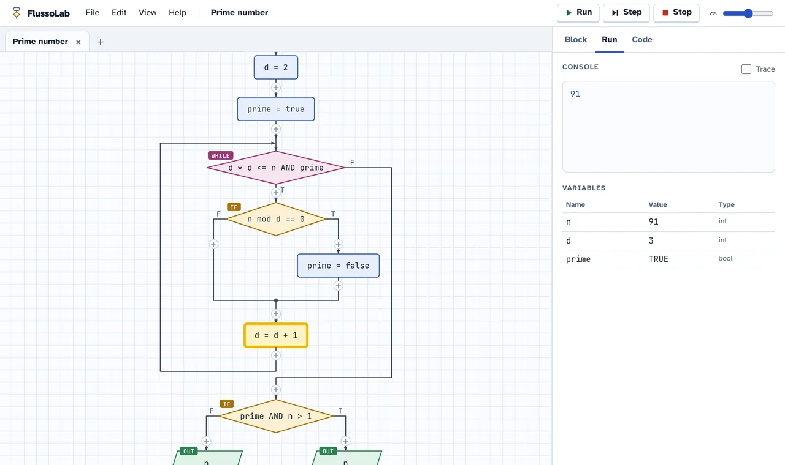
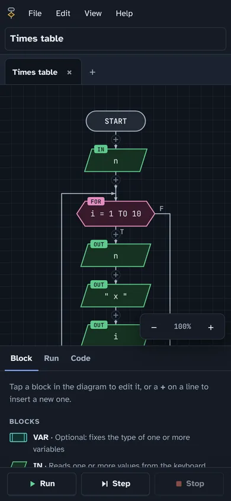

Flowcharts that actually run, right in the browser
FlussoLab is a free editor to learn programming with flowcharts. You build with blocks, run step by step and hand in a file. Nothing to install: it works on PC, Mac, Chromebooks and tablets.
Free, no account, works offline too.

What it does
For learners
- The usual blocks: IN, OUT, assignment, IF, WHILE, DO WHILE, FOR, VAR and comment.
- Run the whole program or step by step, with the active block highlighted and a table of variables.
- Errors are flagged before running, with messages that explain what to fix.
- Pseudocode and Python code generated from the diagram, linked block by block.
- Types like in C: int, float, string and bool, with integer division and casts.
For teachers
- Students hand in a .flusso file, or a single ZIP with all their diagrams and images.
- Share a diagram with a link: the class opens it ready to use, with nothing uploaded to a server.
- No accounts and no data collected: the work stays on the device.
- PNG images of the diagrams, ready for tests and slides.
- Free, with its code open to everyone.
Everywhere
- In the browser on Windows, Mac, Linux, Chromebook, iPad and Android.
- Installs as an app and works without internet.
- In English and Italian, with light and dark theme.


An online alternative to AlgoBuild and Flowgorithm
If your class used AlgoBuild or Flowgorithm, FlussoLab has the same blocks and the same way of thinking, with nothing to install. It is also made for classes with Chromebooks and tablets, where installed programs cannot be used.
| FlussoLab | Installed programs | |
|---|---|---|
| Opens in the browser | Yes | No |
| Chromebooks and tablets | Yes | No |
| Works without internet | Yes | Yes |
| Single ZIP to hand in | Yes | No |
Questions
Is it really free?
Yes, always. FlussoLab is released under the CC BY-NC-SA 4.0 license: anyone can use it and study its code, but nobody can sell it or make money from it.
Do I need an account?
No. Diagrams stay saved in the browser on the device; to hand them in or move them, save a .flusso file.
Does it work on Chromebooks and iPads?
Yes. Any up-to-date browser will do: Chrome, Edge, Safari or Firefox. On phones and tablets the interface adapts to the screen.
Does it work without internet?
Yes, after the first visit. You can also install it as an app: from the browser menu in Chrome and Edge, or with “Add to Home Screen” in Safari.
How do students hand in their work?
File → Save creates a .flusso file. File → Export submission (ZIP) creates one file with all open diagrams, both to reopen and as images, with the student’s name.
Which languages does it translate the diagram into?
Into pseudocode, in English or Italian, and into Python, which you turn on in the options.
Can I suggest changes or translate it?
Yes. The project is on GitHub: you can report problems, propose changes or add a language with a single file.